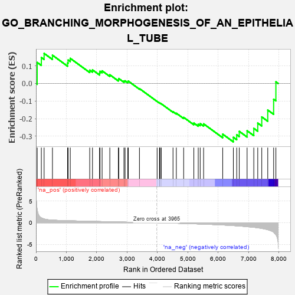
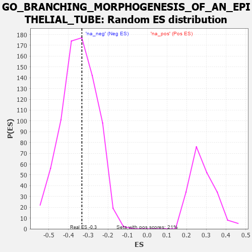

| | | Dataset | 7d |
| Phenotype | NoPhenotypeAvailable |
| Upregulated in class | na_neg |
| GeneSet | GO_BRANCHING_MORPHOGENESIS_OF_AN_EPITHELIAL_TUBE |
| Enrichment Score (ES) | -0.33230326 |
| Normalized Enrichment Score (NES) | -0.9546156 |
| Nominal p-value | 0.5423514 |
| FDR q-value | 0.9069537 |
| FWER p-Value | 1.0 |
Table: GSEA Results Summary

Fig 1: Enrichment plot: GO_BRANCHING_MORPHOGENESIS_OF_AN_EPITHELIAL_TUBE
Profile of the Running ES Score & Positions of GeneSet Members on the Rank Ordered List
| PROBE | GENE SYMBOL | GENE_TITLE | RANK IN GENE LIST | RANK METRIC SCORE | RUNNING ES | CORE ENRICHMENT | | 1 | SIX2 | | | 40 | 3.152 | 0.1197 | No |
| 2 | FOXF1 | | | 176 | 1.136 | 0.1476 | No |
| 3 | TBX20 | | | 267 | 0.880 | 0.1711 | No |
| 4 | SRF | | | 542 | 0.615 | 0.1608 | No |
| 5 | YAP1 | | | 1041 | 0.475 | 0.1168 | No |
| 6 | RBM15 | | | 1057 | 0.473 | 0.1336 | No |
| 7 | SRC | | | 1128 | 0.459 | 0.1429 | No |
| 8 | LRP5 | | | 1769 | 0.342 | 0.0758 | No |
| 9 | SMAD4 | | | 1860 | 0.326 | 0.0773 | No |
| 10 | FOXD1 | | | 2093 | 0.292 | 0.0596 | No |
| 11 | BMP7 | | | 2107 | 0.290 | 0.0694 | No |
| 12 | DDR1 | | | 2176 | 0.280 | 0.0719 | No |
| 13 | MET | | | 2430 | 0.240 | 0.0495 | No |
| 14 | PHB2 | | | 2712 | 0.197 | 0.0218 | No |
| 15 | SLIT2 | | | 2724 | 0.195 | 0.0281 | No |
| 16 | FGFR2 | | | 2895 | 0.167 | 0.0133 | No |
| 17 | ACVR1 | | | 2932 | 0.161 | 0.0152 | No |
| 18 | WNT4 | | | 3023 | 0.146 | 0.0096 | No |
| 19 | LEF1 | | | 3037 | 0.144 | 0.0137 | No |
| 20 | MED1 | | | 3405 | 0.089 | -0.0291 | No |
| 21 | EYA1 | | | 3987 | -0.006 | -0.1022 | No |
| 22 | SFRP2 | | | 4065 | -0.018 | -0.1112 | No |
| 23 | CSF1 | | | 4074 | -0.019 | -0.1114 | No |
| 24 | WNT2 | | | 4084 | -0.021 | -0.1117 | No |
| 25 | ABL1 | | | 4125 | -0.027 | -0.1157 | No |
| 26 | ILK | | | 4510 | -0.096 | -0.1603 | No |
| 27 | DLG5 | | | 4619 | -0.121 | -0.1692 | No |
| 28 | DLG1 | | | 4860 | -0.169 | -0.1927 | No |
| 29 | SMO | | | 5195 | -0.247 | -0.2251 | No |
| 30 | TCF21 | | | 5340 | -0.283 | -0.2321 | No |
| 31 | SOX8 | | | 5404 | -0.296 | -0.2283 | No |
| 32 | VDR | | | 5517 | -0.325 | -0.2296 | No |
| 33 | STK4 | | | 6145 | -0.518 | -0.2882 | No |
| 34 | LAMA1 | | | 6496 | -0.659 | -0.3062 | Yes |
| 35 | MKS1 | | | 6607 | -0.715 | -0.2918 | Yes |
| 36 | PAK1 | | | 6691 | -0.757 | -0.2724 | Yes |
| 37 | FAT4 | | | 6948 | -0.901 | -0.2690 | Yes |
| 38 | AR | | | 7169 | -1.046 | -0.2553 | Yes |
| 39 | MSX2 | | | 7299 | -1.171 | -0.2253 | Yes |
| 40 | LHX1 | | | 7431 | -1.305 | -0.1902 | Yes |
| 41 | PKD1 | | | 7628 | -1.611 | -0.1511 | Yes |
| 42 | PKD2 | | | 7822 | -2.167 | -0.0897 | Yes |
| 43 | CAV3 | | | 7896 | -2.739 | 0.0095 | Yes |
Table: GSEA details [plain text format]

Fig 2: GO_BRANCHING_MORPHOGENESIS_OF_AN_EPITHELIAL_TUBE: Random ES distribution
Gene set null distribution of ES for GO_BRANCHING_MORPHOGENESIS_OF_AN_EPITHELIAL_TUBE